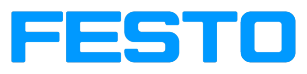

Xuất xứ: Đức
Festo là một trong những nhà sản xuất thiết bị khí nén và tự động hóa lớn nhất thế giới — từ xy-lanh, van, cụm xử lý khí đến valve terminal, cơ cấu chấp hành điện và giải pháp cho dây chuyền. Máy móc châu Âu nhập về Việt Nam rất thường dùng khí nén Festo.
Fast Group là đại lý phân phối hàng Festo chính hãng — cung cấp xy-lanh, van, FRL, fitting và phụ kiện Festo cho bảo trì thay thế và dự án mới, kèm chứng từ nguồn gốc rõ ràng.
Mã Festo gồm tên dòng và chuỗi thông số: DSBC-32-100-PPVA-N3 nghĩa là xy-lanh ISO 15552 cỡ lòng 32 mm, hành trình 100 mm, giảm chấn khí tự điều chỉnh. Fast Group giải mã chuỗi này từ nhãn cũ để đặt đúng từng tùy chọn.
Tra cứu nhanh trên catalog Festo trên hydraulic.com.vn — hơn 31.000 mã và khoảng 1.000 dòng sản phẩm, phân theo nhóm xy-lanh, van, FRL, fitting, chân không.
Có part number hoặc số hiệu (part no. 7 chữ số) trên nhãn? Dùng công cụ tìm mã Festo để xem thông số trước khi gửi RFQ.
Festo được thành lập năm 1925 tại Esslingen am Neckar (Đức); tên công ty ghép từ họ hai nhà sáng lập Fezer và Stoll. Ban đầu công ty làm dụng cụ chế biến gỗ, sau đó chuyển mạnh sang khí nén từ thập niên 1950.
Ngày nay Festo là doanh nghiệp gia đình với mạng lưới bán hàng và sản xuất toàn cầu, cung cấp cả thiết bị khí nén, truyền động điện lẫn đào tạo tự động hóa công nghiệp (Festo Didactic).
Xy-lanh là nhóm Festo được thay thế nhiều nhất. Dòng DSBC theo ISO 15552 dùng cho tải trung bình đến nặng, ADN compact cho không gian hẹp, DSNU thân tròn theo ISO 6432 cho máy nhẹ, DGC không trục cho hành trình dài.
Khi thay thế cần đúng cỡ lòng, hành trình, kiểu giảm chấn và tùy chọn cảm biến từ (ký hiệu A trong mã).
Ví dụ ADN-25-50-A-P-A: ADN compact, cỡ lòng 25 mm, hành trình 50 mm, có nam châm cho cảm biến (A), giảm chấn đàn hồi (P), đầu cần ren ngoài (A).
Các ký tự sau hành trình quyết định kiểu đầu cần, giảm chấn — sai một ký tự là không lắp được bộ gá cũ.
| Nhóm | Dòng tiêu biểu | Số mã trên catalog |
|---|---|---|
| Xy-lanh & truyền động khí nén | DSBC, ADN, DSNU, DGC, DFM | 8.047 |
| Vacuum & gripper | OVEM, VN, ESG, HGPT | 1.062 |
| Điện, điều khiển & cảm biến | SMT, SME, SDBT, bộ điều khiển | 2.500 |
Xem cỡ lòng, hành trình và tùy chọn tại nhóm xy-lanh và truyền động khí nén Festo; thiết bị gắp đặt xem nhóm chân không và tay kẹp Festo.
Van điện từ dòng VUVG và valve terminal VTUG, CPX-MPA là cấu hình phổ biến trên máy châu Âu. Bộ FRL dòng MS (MS4, MS6, MS9) xử lý khí nén đầu vào: lọc, điều áp, tra dầu, van khởi động mềm.
Fitting cắm nhanh QS và ống PUN là vật tư tiêu hao — nên đặt theo bộ cho từng máy để giảm thời gian dừng.
Với valve terminal, cần gửi mã cấu hình đầy đủ trên nhãn vì mỗi vị trí van có thể khác nhau.
Bộ FRL MS chọn theo lưu lượng khí và cỡ cổng, không chỉ theo cỡ ống.
| Nhóm | Dòng tiêu biểu | Số mã trên catalog |
|---|---|---|
| Van & valve terminal | VUVG, VUVS, VTUG, MPA | 7.026 |
| Bộ xử lý khí nén FRL | MS4, MS6, MS9, MSB | 2.510 |
| Fitting, ống & phụ kiện | QS, PUN, GRLA, U-series | 5.627 |
| Phụ kiện & thiết bị khác | Gá lắp, đầu nối, phụ tùng | 4.953 |
Tra van theo số cổng và điện áp tại danh mục van và valve terminal Festo; bộ xử lý khí xem nhóm FRL Festo dòng MS.
Nhãn Festo có hai thông tin: part number (số) và type code (chữ). Gửi cả hai giúp xác nhận nhanh, tránh nhầm giữa các bản cấu hình gần giống.
Các hậu tố như -A (có nam châm), -P (giảm chấn đàn hồi), -PPV (giảm chấn khí) thay đổi hoàn toàn cách lắp và vận hành.
Van điện từ cùng thân có nhiều điện áp coil (24 V DC, 110 V AC, 230 V AC). Xác nhận điện áp trước khi đặt.
Một số dòng cũ (DNC, DSN) đã có dòng kế nhiệm (DSBC, DSNU). Kích thước lắp theo chuẩn ISO nên thường thay thế trực tiếp.
Fast Group là đại lý phân phối hàng Festo chính hãng, ưu tiên nguồn cung rõ ràng và chứng từ đầy đủ. Tùy yêu cầu, lô hàng đi kèm:
Nhận danh sách khí nén theo từng máy (xy-lanh, van, FRL, fitting), gom thành một đơn và báo giá theo mã.
Hỗ trợ rà soát BOM khí nén cho máy mới, đề xuất mã thay thế cho dòng đã ngừng. Xem thêm danh mục fitting và ống khí nén Festo khi cần đặt vật tư lắp đặt.
Có. Fast Group là đại lý phân phối hàng Festo chính hãng, cung cấp xy-lanh, van, FRL, fitting và phụ kiện kèm chứng từ nguồn gốc rõ ràng.
Được. Gửi ảnh nhãn có part number hoặc type code, Fast Group giải mã và đối chiếu mã còn sản xuất.
Dòng DNC đã được thay bằng DSBC cùng chuẩn ISO 15552, kích thước lắp tương đương. Fast Group xác nhận mã thay thế theo cỡ lòng và hành trình.
Được nếu cùng chuẩn ISO 15552 hoặc ISO 6432 và cùng cỡ lòng, hành trình. Cần đối chiếu thêm ren cần, kiểu gá và cảm biến.
Type code đầy đủ, số cổng/vị trí, điện áp coil, kiểu đầu nối điện và cỡ ren cổng khí.
Tùy mã và số lượng; Fast Group báo thời gian giao cụ thể trong từng báo giá.
Gửi part number, type code hoặc ảnh nhãn — Fast Group tra mã Festo và báo giá hàng chính hãng kèm chứng từ.